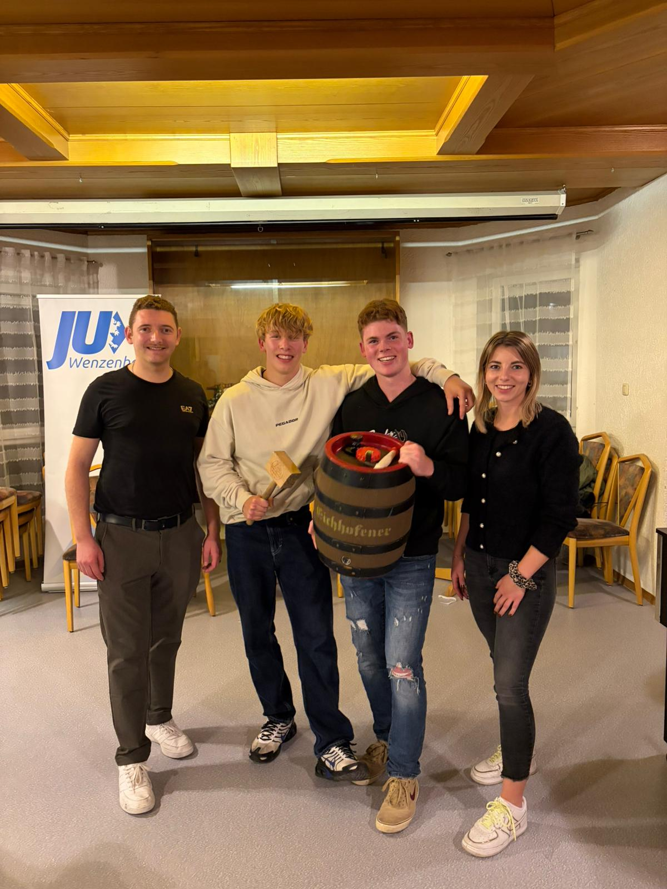
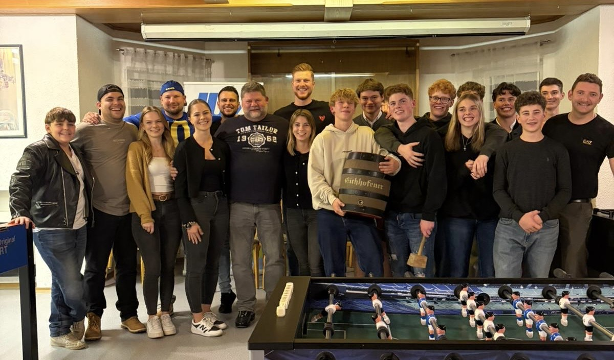
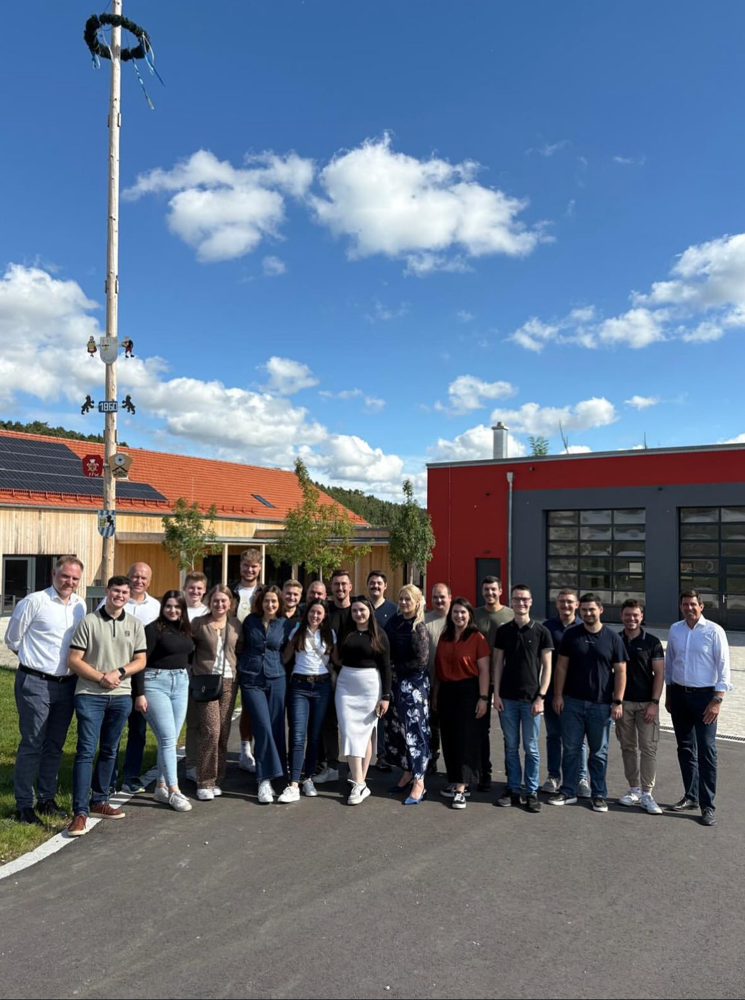
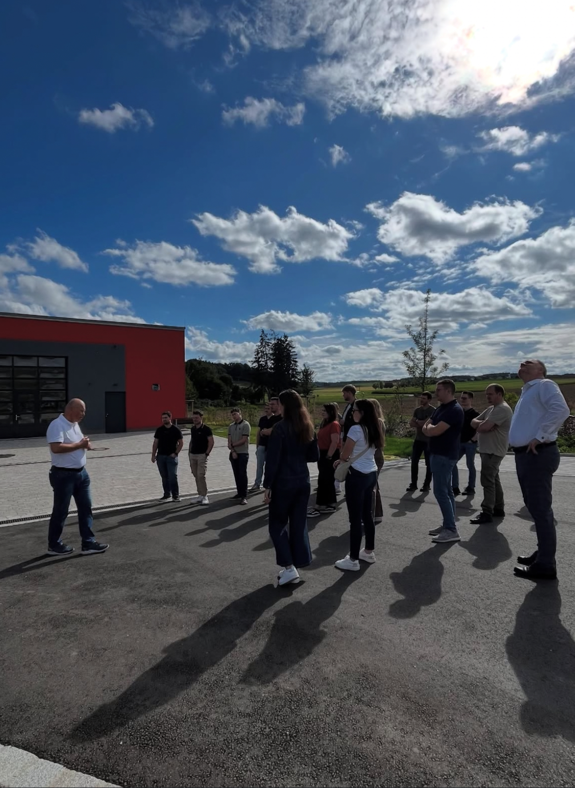
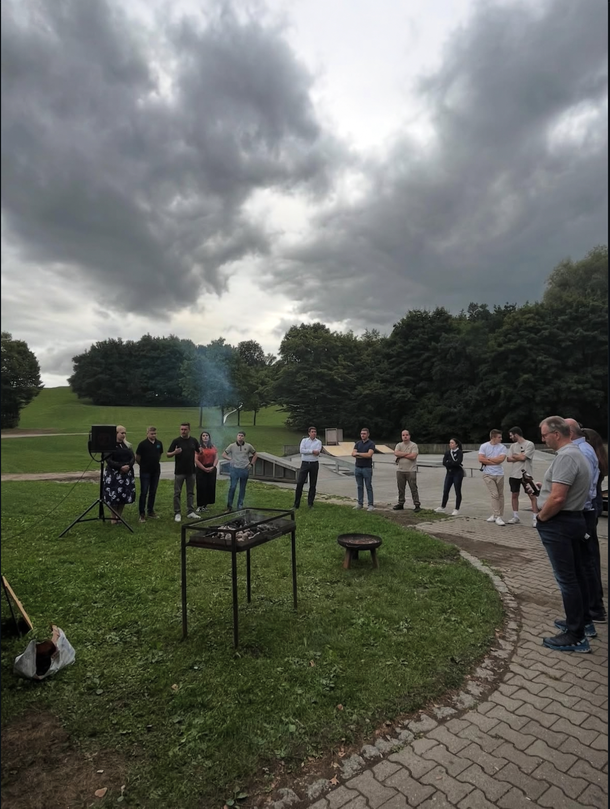
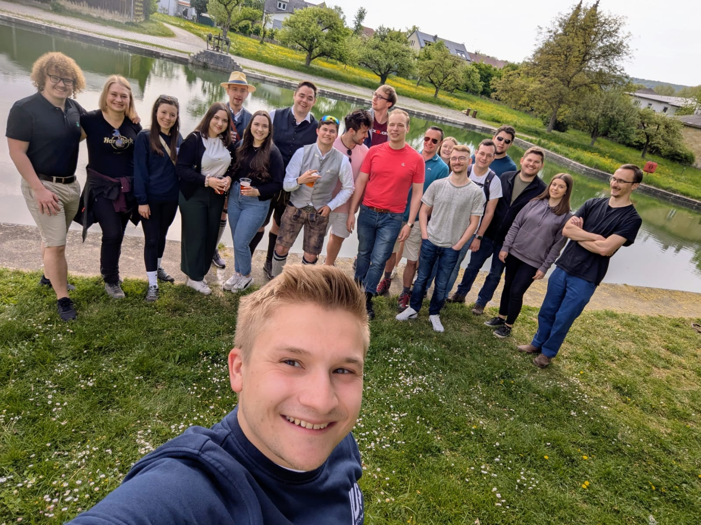

Hier findest du alle kommenden Termine, Rückblicke auf vergangene Aktionen und unseren Veranstaltungskalender.
Komm vorbei, lerne uns kennen und werde Teil unserer Gemeinschaft.
Aktuell sind keine kommenden Veranstaltungen eingetragen.
Ein Rückblick auf unsere Aktionen, Treffen und gemeinsamen Erlebnisse.
Wie bereits vor einem Jahr hat die JU Wenzenbach zu einem Kickerturnier im Gasthaus Gambachtal eingeladen.
In zweier Teams traten die Teilnehmer gegeneinander an. 18 Teams mit dem selben Ziel: Das 20-Liter-Bierfass zu gewinnen.
Das Team "Hosendirdlwetzer" hat sich in einem spannenden Finale den 1. Platz gesichert
und damit auch das heiß begehrte 20-Liter-Bierfass!
Danke an alle die dabei waren!
Besonerer Dank gilt Getränke Weßgerber, die uns bei den Preisen unterstützt haben!
Ein riesiges Dankeschön geht auch an die Familie Stuber, die uns die Location im Gasthaus Gambachtal bereitgestellt hat und uns wie immer bestens mit Speis und Trank versorgten.



Bei einer Busrundfahrt bekamen wir spannende Einblicke in den Wirtschaftsstandort Schierling & die Gemeinde Schierling und deren Entwicklung.
Gemeinsam mit dem Schierlinger Bürgermeister Christian Kiendl begaben wir uns auf eine kleine "Safari-Tour" durch die Gemeinde und haben so gleich mehrere große und mittelständische Unternehmen in Schierling kennengelernt. Zusätzlich wurden weitere interessante Stops im Ortsgebiet sowie den Ortsteilen mit Fokus auf die Entwicklung Schierlings durch gelungene Kommunalpolitik in den letzten Jahren eingelegt. Es wurde auch ein Blick auf das neue Wohnbaugebiet "Regensburger Weg 2“ geworfen.
Den durchaus gelungenen Tag ließen wir beim anschließenden gemeinsamen Grillen ausklingen.
Wir danken der JU Schierling und dem Team Junge Liste für die Organisation!



Die Wanderung durch das Naturschutzgebiet Donaudurchbruch mit anschließender Brauereiführung war ein voller Erfolg – wunderschönes Wetter, großartige Stimmung!

Am Donnerstag, den 03.04.2025 hat die JU Wenzenbach gewählt.
Zu Beginn der Jahreshauptversammlung wurde der Bericht des Vorstandes stellvertretend durch Leopold Fischer für den ehemaligen Vorsitzenden verlesen. Anschließend wurde Patrick Schön zum neuen Vorsitzenden gewählt und Leopold Fischer zu seinem Stellvertreter.
Der neue Vorsitzende freut sich auf eine gute Zusammenarbeit mit dem FU- und den CSU-Ortsverbänden der Gemeinde Wenzenbach. In seiner ersten Rede kündigte der neu gewählte Ortsvorsitzende an, dass er sich auf einen intensiven und aktiven Kommunalwahlkampf 2026 freut.

Die JU Thalmassing lud uns gemeinsam mit dem Landtagsabgeordneten Patrick Grossmann zum politischen Frühshoppen ein.
Die Gelegenheit ließen wir uns natürlich nicht nehmen und tauschten uns über die vergangene Bundestagswahl und andere politische Themen aus. Wir danken der JU Thalmassing nochmals vielmals für die Einladung!


Gemeinsam mit der CSU Wenzenbach und unserem Bundestagsabgeordneten Peter Aumer veranstalteten wir einen Infostand zur Bundestagswahl am 23.02.2025.
Bei diesem hörten wir uns die Wünsche und Sorgen unserer Mitbürger an und versuchten diese davon zu überzeugen, beide Stimmen der CSU zu geben.


Veranstaltungstage sind grün markiert. Durch einen Klick kannst du den Termin übernehmen.